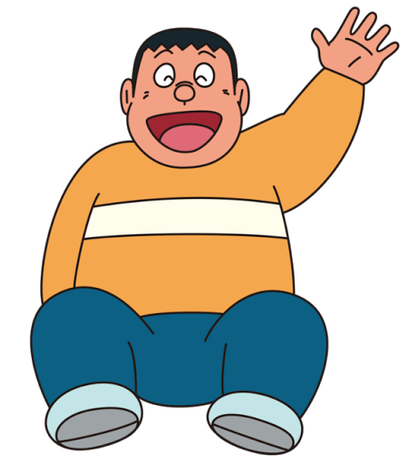

DORAEMON
Introduction:
Doraemon is a Japanese manga series written and illustrated by Fujiko F. Fujio. The manga was first serialized in December 1969, with its 1,345 individual chapters, published by Shogakukan from 1970 to 1996. The story revolves around an earless robotic cat named Doraemon, who travels back in time from the 22nd century to aid a boy named Nobita Nobi.
There are many characters in Doraemon cartoon. All of them, there are five main characters.
Doraemon:
Doraemon is a cat-like robot created for Nobita from the future. But people often mistake him for a raccoon dog. He possesses a 4D pocket from which he can acquire various kinds of futuristic tools from a future department store. Doraemon is considered a substandard product because many of his robotic features malfunctioned after production due to an accident in the factory while he was being built. Due to this malfunction, Doraemon did not do well at the robot's school and during the final presentation show, he performed badly and nobody wanted to hire him. Despite this, Doraemon shows a lot of intelligence and common sense.
Nobita Nobi:
Nobita Nobi is a fifth grader, the only child of his parents. Nobita is usually foolish, uncoordinated, lazy, weak, childish and bad at sports. He dislikes books and possesses basic scientific knowledge. He often takes any chance to get a nap and favors gadgets that give him extra time or do work for him, and is thus known as 'The Lazy King'. Even though Nobita has many flaws, he is actually kind-hearted, occasionally hard-working and sometimes courageous. And despite being shown to be academically poor, the reason behind it is principally his laziness, and he has secured good marks when incited to do so.
Shizuka Minamoto:
Shizuka Minamoto is a smart, kind and pretty girl. She is Nobita's best friend and she often tries to encourage him to do better, though she usually fails to convince him. Shizuka likes to take a bath several times a day, however, she is sometimes interrupted by sudden appearance of Nobita, Gian, or Suneo. Her true passions are sweet potatoes, which she would rather keep to herself out of the knowledge of others, and the violin, in which her playing is even more horrendous than Gian's singing. She is also known for taking piano lessons unwillingly due to her mother's wishes, which is sometimes a reason for declining to hang out with friends. Shizuka is an animal lover and keeps two pets at home: a dog and a canary.
Takeshi Goda (Gian):
Takeshi Goda is a strong and quick-tempered bully. He also frequently steals other children's stuff under the pretext of "borrowing" them. He is known for his horrible singing voice, though he considers himself a great singer. Gian is also confident in cooking, but just like his singing, his hand-made food can be a nightmare for other people very easily. However, Gian does not hesitate to help his friends when they are in real trouble. While he is described by others as intimidating, he is very sensitive and prone to crying when something touching happens, and he actually values his friends highly, a feeling which his friends sometimes reciprocate. Gian also has a soft spot for his younger sister, Jaiko, and usually tries to prevent her from trouble. His catchphrase is "What's mine is mine. What's yours is also mine".

Suneo Honekawa:
Suneo Honekawa is the rich child who loves to flaunt his material wealth before everyone. He sometimes despises Nobita and often makes fun of him, most often resulting in Nobita getting into trouble. However, he is actually one of Nobita's closest friends, who would often ask for his and Doraemon's help. He has an extensive knowledge of science, and is a talented artist and designer, besides being extremely cunning. In some scenes, Suneo is seen as a narcissist who loves to stare at himself in the mirror while telling himself that he is the most handsome guy in the world.
There are some other characters also. They are Dorami and Mini-Doras.
Dorami:
Dorami, also known as Dorami-chan, is the sister of Doraemon. She happens to be about 2 years younger than him. Strangely enough, they are siblings due to the fact that they shared half of the oil from a can. She lives in the 22nd-century Tokyo with Sewashi, Nobita's great-great-grandson. She is yellow and has ears that resemble a large red bow. She likes melonpan and is afraid of cockroaches. She is also shown to be a more advanced robot than Doraemon (Dorami is able to produce 10,000 horse power, in comparison to Doraemon's 129.3). She sometimes visits Nobita with a time machine when Doraemon is "off-duty."
Mini-Doras:
Mini-Doras are actually gadgets of Doraemon. They are mini versions of Doraemon, each with a different color. They can think and feel for themselves, and communicate with Doraemon through the "Mini-Dora" language. They act as helpers for all sorts of tasks, such as repairing the internal mechanism of Doraemon.
Here's some regular characters of the series:

Ending of the series:
The series stopped publishing after Fujimoto's death in 1996, without an ending; this has aroused numerous urban legends throughout the years. One of the most well-known "endings" of the manga was by an amateur manga cartoonist under the pen name "Yasue T. Tajima", first appeared on the Internet in 1998 and made up into a manga in 2005. The story takes place when Doraemon's battery dies, and Nobita later grows up becoming a robot engineer, potentially revive Doraemon and live a happy life. Tajima issued an apology in 2007, and the profits were shared with Shogakukan and the copyright owner, Fujiko F. Fujio Pro.